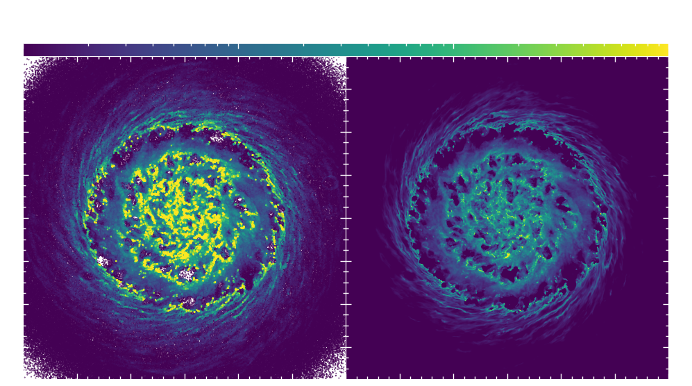
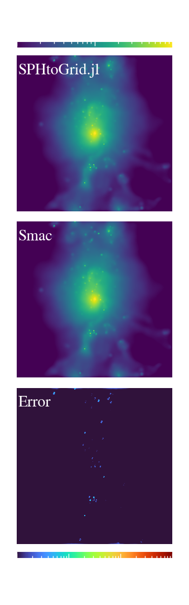
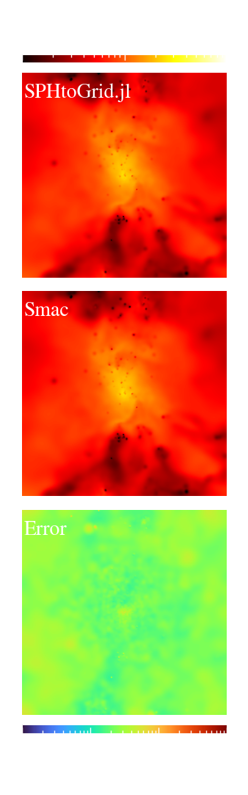

Mapping SPH Data to Cartesian Grids
Mapping SPH particles to a grid instead of simply plotting color-coded particle positions shows the actual gas quantities as they are used in an SPH code: weighted with a kernel, according to their distance to each other. You can see this in the following plot, left are color-coded particle positions, right is the mean density in the SPH particles along the line of sight, interpolated to a grid.

You can map SPH data to a grid using the function sphMapping, which comes in two flavors: CIC and TSC.
Define parameters for mapping
To map the data you need to define the mapping parameters via the mappingParameters struct.
SPHtoGrid.mappingParameters — TypemappingParameters( T::DataType=Float64;
x_lim::Vector{Float64} = [-1.0, -1.0],
y_lim::Vector{Float64} = [-1.0, -1.0],
z_lim::Vector{Float64} = [-1.0, -1.0],
center::Vector{Float64} = [-1.0, -1.0, -1.0],
x_size::Float64 = -1.0,
y_size::Float64 = -1.0,
z_size::Float64 = -1.0,
pixelSideLength::Float64 = -1.0,
Npixels::Int64 = 0)Parameter object for sph to grid mapping. Define either *_lim, or center and *_size. Resolution is defined by pixelSideLength or Npixels.
One way to set this up is by defining the limits of the map as
par = mappingParameters(xlim=[xmin, xmax],
ylim=[ymin, ymax],
zlim=[zmin, zmax],
Npixels=200)or give a center position and the size in each direction
par = mappingParameters(center=[x0, y0, z0],
x_size=x_size,
y_size=y_size,
z_size=z_size,
Npixels=200)Instead of Npixels you can also give the keyword argument pixelSideLength if you prefer to define your image that way.
If you are mapping a periodic box you also can give the keyword boxsize to enable periodic mapping.
par = mappingParameters(center=[x0, y0, z0],
x_size=x_size,
y_size=y_size,
z_size=z_size,
boxsize=boxsize,
Npixels=200)CIC
For "Counts in Cell" (CIC) interpolation use the function sphMapping with these input values:
SPHtoGrid.sphMapping — MethodsphMapping( Pos::Array{<:Real}, HSML::Array{<:Real}, M::Array{<:Real},
Rho::Array{<:Real}, Bin_Quant::Array{<:Real},
Weights::Array{<:Real}=Rho;
param::mappingParameters,
kernel::AbstractSPHKernel,
show_progress::Bool=true,
parallel::Bool=false,
reduce_image::Bool=true,
return_both_maps::Bool=false,
filter_particles::Bool=true,
dimensions::Int=2,
calc_mean::Bool=false)Maps the data in Bin_Quant to a grid. Parameters of mapping are supplied in param and the kernel to be used in kernel.
Arguments
Pos: Matrix (3xNpart) with particle positionsHSML: Array with particle hsmlM: Array with particle massesRho: Array with particle densitiesBin_Quant: Array with particle quantity to be mappedWeights: Array with weights. Defaults to density-weightedparam:mappingParametersfor this mapkernel:AbstractSPHKernelto be used for mappingshow_progress: Show progress barparallel: Run on multiple processorsreduce_image: If weights need to be applied or not. Set tofalseforpart_weight_physicalreturn_both_maps: Returns the full image array. To be used with parallel mapping of subfilesfilter_particles: Find the particles that are actually contained in the imagedimensions: Number of mapping dimensions (2 = to grid, 3 = to cube)calc_mean: Calculates the mean value along the line of sight. If set tofalsethe particle only contributes if itsBin_Quantis larger than 0
Select Kernel
You also need to choose the kernel you used in the simulation. For this you need to install the package SPHKernels.jl. You can currently use these kernels:
k = Cubic()
k = Quintic()
k = WendlandC4()
k = WendlandC6()
k = WendlandC8()Please see the SPHKernels docs for more details.
Mapping
With the setup done you can now map (e.g.) density of your data using the function above as:
image = sphMapping(x, hsml, m, rho, rho, param=par, kernel=k)Replacing the second rho with any other quantity would map that quantity of course. Please note: This function doesn't do any unit conversion for you, so you need to convert to the desired units beforehand. You can do this e.g. with GadgetUnits.jl.
Image now contains a 2D array with the binned data and can easily be plotted with imshow() from any plotting package of your choosing.
The keyword parallel = true causes the run to use multiple processors. For this you need to start julia with julia -p <N> where <N> is the number of processors in your machine, or define
using Distributed
addprocs(8)
# now you can load SPHtoGrid
using SPHtoGridConserved quantities
Particles are mapped to a grid while also conserving the particle volume, following the algorithm described in Dolag et. al. 2006.
Weight functions
With the mapping you may decide to use a specific weighting function. For this you can pass the optional variable Weights in sphMapping.
You can either use your own weight functions or use one of the built-in ones:
SPHtoGrid.part_weight_one — Functionpart_weight_one(N::Integer)Equivalent to no weighting. Returns an Array of ones.
SPHtoGrid.part_weight_physical — Functionpart_weight_physical(N::Integer, par::mappingParameters, x_cgs::Real=3.085678e21)Physical weighting function in units of [cm/pix]. To be used with sphMapping.
part_weight_physical(N::Integer, x_cgs::Real=3.085678e21)Physical weighting function in units of [cm]. To be used with healpix_map.
SPHtoGrid.part_weight_emission — Functionpart_weight_emission(rho::Array{<:Real}, T_K::Array{<:Real})Emission weighted mapping. Takes density in internal untis and temperature in K and computes weights.
SPHtoGrid.part_weight_spectroscopic — Functionpart_weight_spectroscopic(rho::Array{<:Real}, T_K::Array{<:Real})Spectroscopic weighted mapping from Mazotta+ 04. Takes density and temperature and computes weights.
SPHtoGrid.part_weight_XrayBand — Functionpart_weight_XrayBand(T_K::Array{<:Real}, Emin::Real, Emax::Real)Computes Xray weighted emission of a defined energy band. Emin and Emax are energies in eV.
Units
As you have to handle unit conversion yourself please note that internally the image contains two components: image is the mapped pixel value and wimage is just the geometry weighting of the particle which will be applied if reduce_image=true in sphMapping.
This means that the resulting images have the units:
image = [Bin_Quant] * [Weights] * [pix^2]
wimage = [Weights] * [pix^2]
Helper Function
If you're lazy like me and don't want to go through the entire process of image reduction and saving the fits file by hand you can use
SPHtoGrid.map_it — Functionmap_it(pos_in, hsml, mass, rho, bin_q, weights, RM=nothing;
param::mappingParameters,
kernel::AbstractSPHKernel=WendlandC6(2),
snap::Integer=0,
units::AbstractString="",
image_prefix::String="dummy",
reduce_image::Bool=true,
parallel=true,
calc_mean::Bool=true, show_progress::Bool=true,
sort_z::Bool=false,
stokes::Bool=false,
projection="xy")Small helper function to copy positions, map particles and save the fits file.
Arguments
pos_in: Matrix (3xNpart) with particle positionshsml: Array with particle hsmlmass: Array with particle massesrho: Array with particle densitiesbin_q: Array with particle quantity to be mappedweights: Array with weights. Defaults to density-weightedparam:mappingParametersfor this mapkernel:AbstractSPHKernelto be used for mappingunits: Unit string will be saved to FITS fileimage_prefix: Name of the file to save, withou.fitsfile-endingreduce_image: If weights need to be applied or not. Set tofalseforpart_weight_physicalparallel: Run on multiple processors.calc_mean: Calculates the mean value along the line of sight. If set tofalsethe particle only contributes if itsbin_qis larger than 0.show_progress: Show progress barsort_z: Sort the particles according to their line-of-sight direction. Needed for polarisation mapping.stokes: Set totrueof you are mapping Stokes parameters to account for Faraday rotation of the polarisation angle.projection: Which plane the position should be rotated in. Can also be an Array of 3 Euler angles (in [°]) (not used yet!)
Comparison to Smac
As a reference for the mapping we use Smac (Dolag et al. 2005). You can see the comparison with the relative error in the following images. Differences in the LOS integration stem from a relative shift of the SPHtoGrid image by one pixel. The bulk of the error in the density weighted map stems from a slightly different calculation of the temperature.
| Line-of-sight integration | Density weighted |
|---|---|
|  |  |